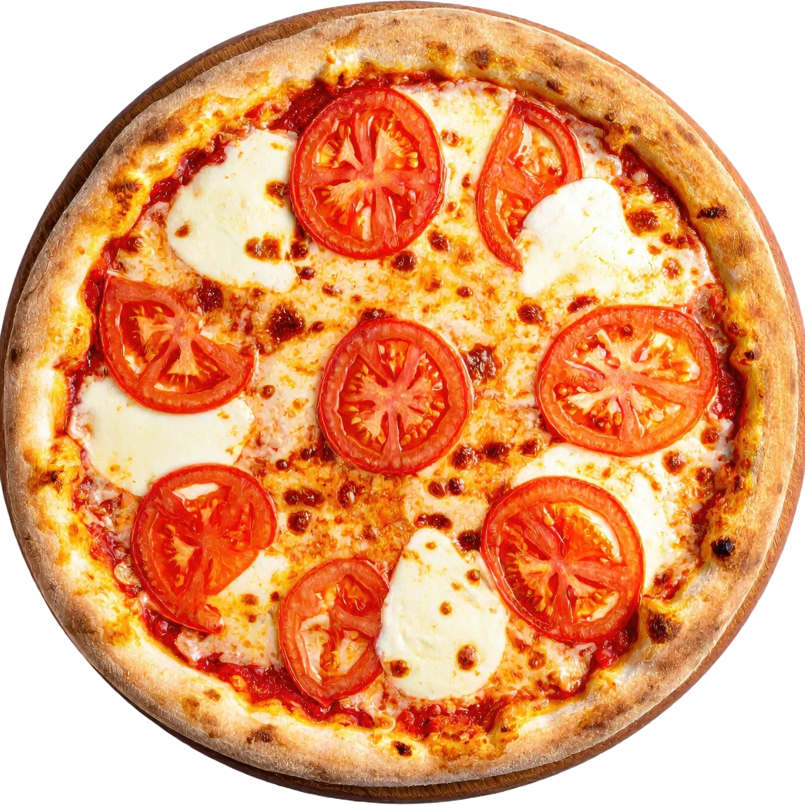

Unsere Geschichte
Manches macht man einfach noch wie früher.
Forno di Napoli beruht auf einer Idee: echte neapolitanische Pizza kennt keine Abkürzungen. Der Biga-Teig reift bis zu 72 Stunden. Die Tomaten kommen aus San Marzano. Der Mozzarella ist Fior di Latte, von Hand gezupft. Dann geht alles kurz in den Ofen — bei einer Hitze, die nur wenige Küchen erreichen.
Keine Abkürzungen, keine Tiefkühlböden. Einfach Pizza, wie sie schmecken soll.
450°C
Ofentemperatur
72h
Teigruhezeit
90s
Backzeit
